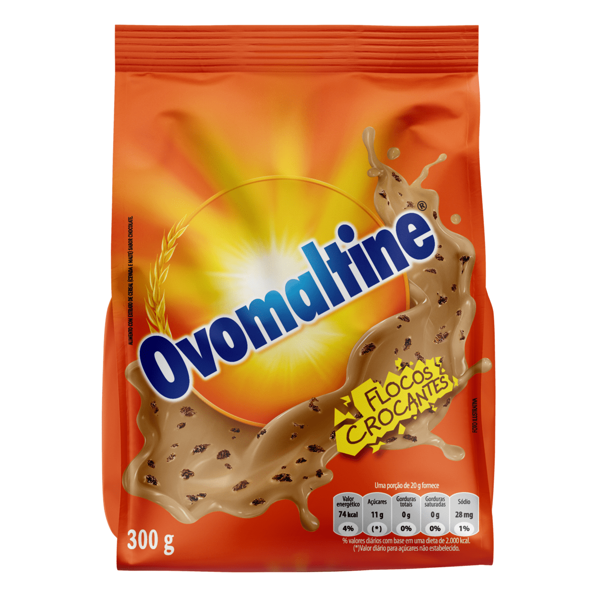

Ovomaltine é uma marca conhecida por seu achocolatado crocante. Com um sabor único e textura especial, o Ovomaltine é apreciado em diversas formas, como bebida, cobertura de sorvetes e ingrediente de receitas.
As crianças se deliciaram com o achocolatado Ovomaltine, misturando-o ao leite e desfrutando de uma bebida saborosa e crocante.